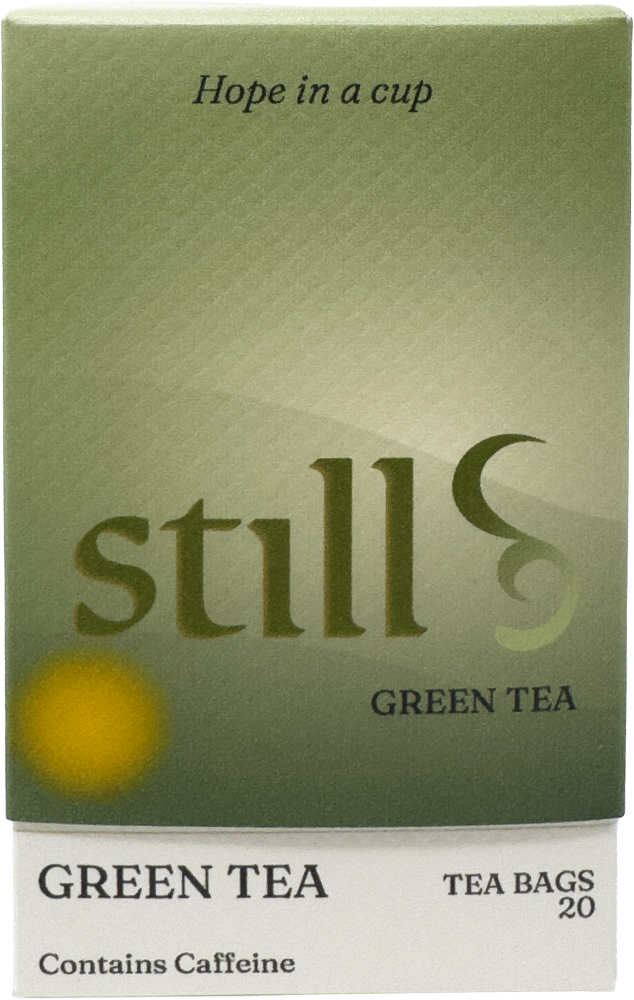

01 / GREEN TEA
still here.
The Process
Green tea leaves are heated soon after harvest to preserve their natural green character.
The Benefits
Green tea contains naturally occurring catechins, including EGCG, which have antioxidant properties. Its caffeine can also support alertness.
The Meaning
Like the leaves, we are still growing, even when we can't see it.